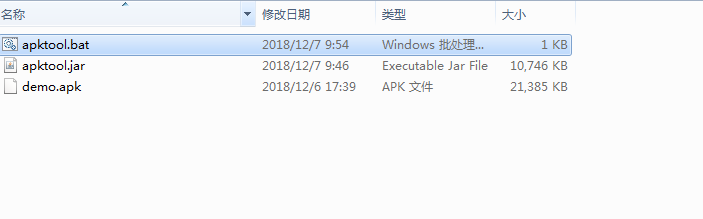
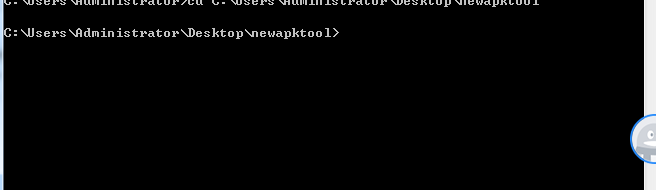
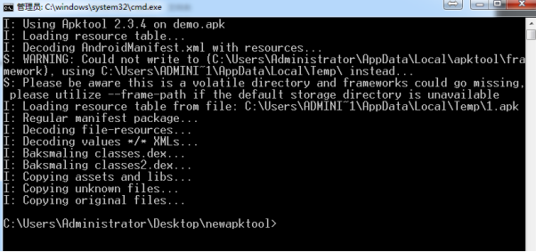

反编译Apk，修改文件重新打包APk。
一、 修改资源文件重新打包。
1、使用apktool直接反编译apk
1.1配置apktool环境：
1.1.1打开apktool官网 https://ibotpeaches.github.io/Apktool/install/
1.1.2编写执行脚本文件apktool.bat。
内容：
@echo off
if "%PATH_BASE%" == "" set PATH_BASE=%PATH%
set PATH=%CD%;%PATH_BASE%;
chcp 65001 2>nul >nul
java -jar -Duser.language=en -Dfile.encoding=UTF8 "%~dp0\apktool.jar" %*
1.1.3 下载apktool.jar包。
再下载最新的地址 https://bitbucket.org/iBotPeaches/apktool/downloads
1.1.4 .配置apktool的运行环境。
把下载的两个文件都copy到自己指定的目录。

1.2反编译apk包：
1.2.1 命令行进入到apk包所在的文件夹路径

1.2.2 执行反编译命令 apktool d filename

执行完毕生成demo文件夹
1.3修改内容，修改AndroidManifest.xml或者替换res文件。
1.4 重新签名打包
1.4.1 回编译apk apktool b file
执行完毕
生成文件\demo\dist\demo.apk
1.4.2 重新签名
1）签名文件
2）修改文件名demo.apk 改为 update.zip
3）到指定目录执行Sign.bat命令
执行完成
修改签名后文件名字update_signed.zip 改为 demo_signed.apk
4）完成，安装启动，完美。
二、 使用dex2jar反编译查看java代码
1.1 下载dex2jar和jd-gui
dex2jar: https://github.com/pxb1988/dex2jar
jd-gui: http://jd.benow.ca/
1.2 解压得到 dex文件
1.3 使用dex2jar将从apk中解压得到的dex文件转成jar包
1.3.1 拷贝 dex文件到dex2ja目录 执行 dex2jar classes.dex 与dex2jar classes2.dex
分别生成 classes_dex2jar.jar于classes2_dex2jar.jar
1.4 使用jd-gui来查看jar包内容
1.5 修改内容
新建工程，新建要修改的class文件的对应java文件（包名，文件名保持一致）引入jar包。
修改内容，编译生成class文件。然后直接替换到jar包中。
1.6 把jar包重新转成dex文件。
1.7 将修改完成后的dex文件复制到原来的apk文件中
删掉这个文件
1.8 然后压缩成zip。修改文件后缀为apk。
1.9 重新签名（ 同 一中 1.4.2）